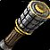

تغییر قیمت فروش آیتمها به وندور در سرورهای زنده WoW: Forever
با ریست هفتگی اخیر، قیمت فروش چندین آیتم ساختنی به وندورها در سرورهای زنده WoW: Forever تغییر کرد و روش سودآوری ساخت  Iron Grenade عملاً از کار افتاد.
Iron Grenade عملاً از کار افتاد.

همزمان با ریست هفتگی اخیر، قیمت فروش آیتمهای متعددی به وندورها در WoW: Forever دستخوش تغییر شد. این اقدام احتمالاً روشهای موسوم به Vendor Shuffle را هدف قرار داده است؛ ترفندی پرطرفدار برای کسب Gold که در آن مواد اولیه ارزانقیمت خریداری شده و به صورت انبوه به آیتمهایی گرانتر تبدیل میشوند تا با فروش آنها به وندور سودی حاصل شود که تزریق مستقیم پول به اقتصاد بازی به حساب میآید.
پایان روش سودآوری با 
Iron Grenade
یکی از شناختهشدهترین روشها در Classic ساخت Iron Grenade بود که با ترکیب Iron Bar، Heavy Blasting Powder و Silk Cloth تعداد چندتایی از این نارنجک ساخته میشد. در هاتفیکس اخیر قیمت فروش این آیتم کاهش یافته است و از ۵ نقره مواد وندور، تنها ۳ نقره و ۷۵ مس بازمیگردد که این روش را کاملاً از رده خارج میکند.
افزایش قیمت فروش برخی تجهیزات
این تغییرات صرفاً تضعیف آیتمها نبوده و طبق گزارشها، قیمت فروش تعدادی از آیتمهای ساختنی به وندورها افزایش پیدا کرده است:
- معجون Minor Arcane Elixir با افزایش قیمت فروش مواجه شده است.
- زرههای پا شامل Protector's Chain Leggings و Stormrider's Leather Pants تغییر قیمت داشتهاند.
- زرههای سینه و سر از جمله Stormrider's Leather Armor همراه با Filigreed Pristine Circlet.
- دستکشهای چرمی نظیر Prowler's Leather Gauntlets، Skulker's Leather Gauntlets، Warden's Leather Gauntlets، Skycaller's Leather Gauntlets و Mender's Leather Gauntlets.
- دستکشهای میل مانند Skycaller's Mail Gauntlets و Skirmisher's Mail Gauntlets.
- سایر تجهیزات پا شامل Filigreed Pristine Leggings و Filigreed Shining Leggings.
پیش از این تضعیفهای مشابهی روی سلاحها و Enchanting Wandها در بتای WoW: Forever مشاهده شده بود و این تغییرات، نخستین موج اصلاحات روی سرورهای لایو به شمار میرود.